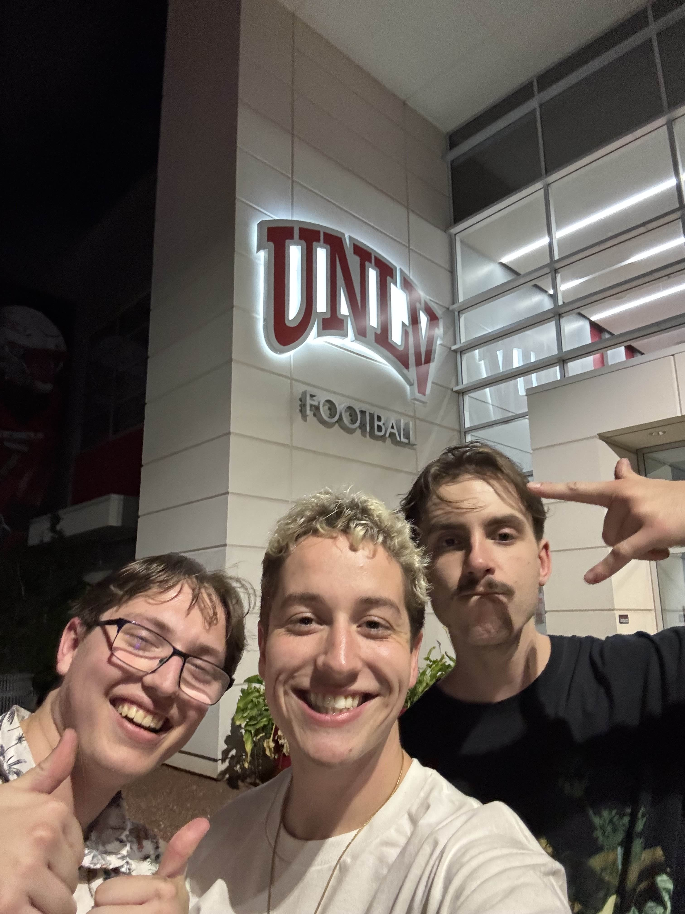

About The X
Table of Contents
- History
- Benefits of Attending
- Schedule
The X - A Brief History
The X is the brainchild of three friends who liked to party together on their trips in the UNLV Marching Band. Dylan, Carson, and Max had a vision; the best afterparties around when it comes to UNLV football, with all their friends, all the vibes, and conveniently located right next to UNLV's campus. While Carson and Dylan came up with the name, it was known that Max's townhouse across Maryland Parkway would be the ideal location for these future, legendary parties. This idea, first sprouted in Summer of 2024, would finally grow its legs after a tumultuous 2024-25 school year and begin its life with the Fall 2025 semester and Rebel Football kickoff.
From left to right: Carson, Max, and Dylan
Benefits of Attending The X
- Build lifelong (or semester-long) friendships
- Get involved in the UNLV community
- Sharpen your party game skills
- Talk college football all night long
- Free food, drinks, and games, all for the cheapest cover charge at UNLV
The X Schedule - Fall 2025
- 8/23/2025 - UNLV Football vs. Idaho State
- 8/28/2025 - UNLV Premier Afterparty
- 9/6/2025 - UNLV Football vs. UCLA
- 10/?/2025 - Carne Asada Night (Featuring Kai and Lil' Dyl)
- 10/11/2025 - UNLV Football vs. Air Force (Homecoming Night)
- 11/1/2025 - UNLV Football vs. New Mexico
- 11/15/2025 - UNLV Football vs. Utah State (Featuring the Fugaziville Crew)
- 11/21/2025 - UNLV Football vs. Hawaii
- 12/5/2025 - UNLV Football Conference Championship OR End of Semester Slosh